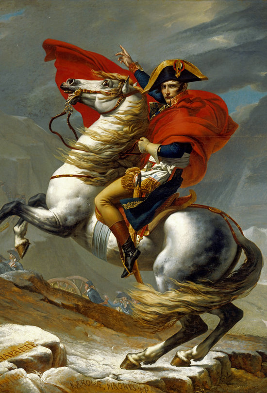

Napoleon bonaparte

"Líder militar francés, emperador, figura influyente en las Guerras Napoleónicas."
Período 1799-1814
- Golpe de Estado (9-10 de noviembre de 1799): Napoleón toma el poder en Francia, poniendo fin a la Revolución Francesa.
- Constitución del Año VIII (1799): Establece el Consulado y otorga a Napoleón el título de Primer Cónsul.
- Campañas Militares en Italia (1800): Napoleón derrota a Austria en Marengo, consolidando su posición.
- Campaña de Egipto (1798-1801): Napoleón intenta expandir su imperio en el Medio Oriente, pero finalmente regresa a Francia.
- Coronación como Emperador (2 de diciembre de 1804): Napoleón se autoproclama Emperador de los Franceses.
- Campañas de Austerlitz y Jena-Auerstedt (1805): Victoria sobre Rusia y Austria en Austerlitz, y sobre Prusia en Jena-Auerstedt.
- Bloqueo Continental (1806): Napoleón intenta debilitar a Gran Bretaña cerrando los puertos europeos al comercio británico.
- Invasión de Rusia (1812): La campaña termina en desastre para Napoleón, con la retirada de su ejército en el brutal invierno ruso.
- Derrota en Leipzig (1813): Napoleón es derrotado en la Batalla de las Naciones por una coalición de naciones europeas.
- Exilio a la Isla de Elba (1814): Después de la abdicación, Napoleón es desterrado a Elba, pero escapa y regresa a Francia.
Período de los Cien Días (1815)
- Regreso de Napoleón (1 de marzo de 1815): Escapa de Elba y regresa a Francia, restaurando temporalmente su poder.
- Batalla de Waterloo (18 de junio de 1815): Napoleón es derrotado por las fuerzas británicas y prusianas bajo el mando de Wellington y Blücher.
- Segundo Exilio (1815): Napoleón es exiliado a la isla de Santa Elena en el Atlántico, donde muere en 1821.
Legado y Consecuencias
- Congreso de Viena (1814-1815): Las potencias europeas se reúnen para restaurar el equilibrio después de las Guerras Napoleónicas.
- Restauración de la Monarquía en Francia (1814-1830): Restauración de la monarquía con Luis XVIII, luego Carlos X.
- Napoleón III (1852-1870): Sobrino de Napoleón, se convierte en presidente y luego emperador de Francia.
- Nacionalismo y Transformaciones Sociales: Las Guerras Napoleónicas influyen en el surgimiento del nacionalismo y cambios en la estructura social en Europa.
Si quieres saber mas sobre quien fue Napoleon Bonaparte y que hizo Visita esta pagina web